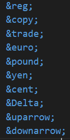

Atributos globais são atributos aplicáveis em todas as Tags, sendo as principais:
class — além de classificar as Tags, é usada para aplicar estilo css e também para acessar com o Java Script.
div class="conteúdo"> /div>
contenteditable — usado para editar o conteúdo da página, porém não é mantido após salvar.
div contentedtable="true"
/div
data-* — usado para expandir os tipos de atributos que podemos usar para fazer mais tarde lógica no Java Script , utilizado em css também.
div data-qualquercoisaaqui=""
div
Escrito com "-" ou tudo junto.
hidden — usado para esconder uma Tag.
div class="carrinho" hidden
conteúdo
/div
id — usado apenas 1 por Tag para identificação, para também mais tarde usar no Java Script e css.
tabindex — usado para ordenar o Tab na página.
div tabindex="3"
/div
div tabindex="1"
/div
div tabindex="2"
/div
title — serve para definir um título para a Tag, quando colocamos o mouse descansando em cima do conteúdo da página.
Para conhecer mais atributos globais acesse: https://developer.mozilla.org/pt-BR/
Para quebrar linhas você vai usar
<br>
Caracteres reservado são caracteres usados no próprio HTML, como < > & " " ' ', não podemos usar nas tags, pois dão erro, mesmo aparecendo na preview o navegador vai tentar ler esses caracteres de alguma forma que faça sentido. Para usarmos precisamos troca-los por outras formas de escrever.

Vamos adicionar alguns simbolos :
®
©
™
€
£
¥
¢
Δ
↑
↓

Basta digitar &#x e o codigo do emoji ex: 🖖
site de emoji :emojipedia.org